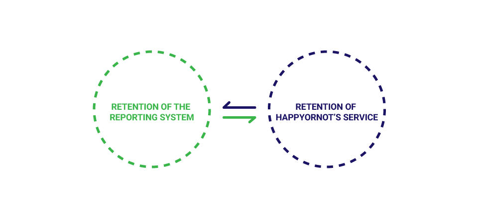
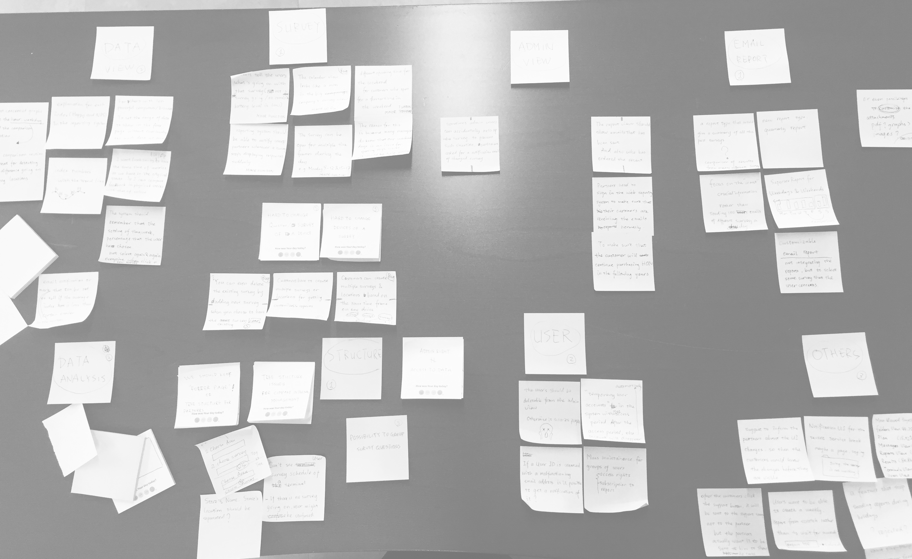

HappyOrNot Data Dashboard
I redesigned the reporting system of HappyOrNot, which helps service providers quickly spot trends and pain points in their service with the instant feedback data in a hassle-free manner.

BACKGROUND
A redesign project with its global business ambition in mind
If you happen to be a busy traveler, you might have encountered the little device with 4 smileys at many of the world’s largest airports, grocery stores, and chain restaurants. As the global leader in instant customer feedback reporting, HappyOrNot provides reporting services for over 2,500 companies worldwide, including many of the 500 fortune companies. In 2016, the company decided to rebuild the core of its business—HappyOrNot reporting system—to envision an even larger global success for the next 10 years.
I led the redesign process and took full ownership in user research, interaction design, and visual design. After the global launch in Nov 2017, the retention rate had risen dramatically from 30% to 45%.
Design Challenge
To build a solid foundation for the company's change in business strategy.
HappyOrNot used to be a product-centered company in its early days, despite the company's subscription-based business model. At the time, the reporting system is less of an important business component for attracting new clients. After 6 years of rapid growth, however, the company has gained a large client base and maintaining them with high-quality reporting services has become more crucial than ever.
* Correlation between retention of the reporting system and the retention of HappyOrNot's service subscription as a whole.
According to the company’s internal research, there is a strong correlation between the retention rate of the reporting system and the retention rate of the whole service. That is to say, rebuilding the reporting system is rebuilding the foundation of HappyOrNot's future business. To achieve that goal, I have to answer these questions:
- How to rebuild the reporting system that motivates clients to use more frequently?
- How to prove the value embedded in HappyOrNot’s reporting service to the clients?
- How to eventually convince clients to stay with the service for a longer term?
Secondary Research
On the surface, what users want is just a cluster of advanced features.
Before conducting any user research, I first went through all the secondary materials collected by the customer care team that capture usability issues reported by users who had trouble while using the system.
* Mapping secondary research findings.
What I learned from the materials are:
- Some of the usability issues and corner use cases that users had in the system
- Expert users’ requirement of advanced features such as customizable report and advanced filtering and sorting.
However, given the biased sampling, the secondary research failed to inform me about:
- The essential goals and needs of users
- The most common use cases that we need to support
- The most common pain points that users encounter in the current system
Initial User Research
Wait...Who are we designing for and what are the common use cases again?
To answer the questions left in the secondary research, I did three things:
- mapped out the stakeholders and narrow my research target down to 3 main user types.
- recruited 12 users with each of the user types covered for in-depth interviews.
- conducted 3 contextual inquiry to observe users behavior pattern while using the system.
Through interviews and observation, I collected rich data regarding goals, needs of each user type and the tasks that they want to achieve with the help of the reporting system. By synthesizing the data, I created personas for each of the 3 user types and had their goals, tasks and pain points listed respectively.